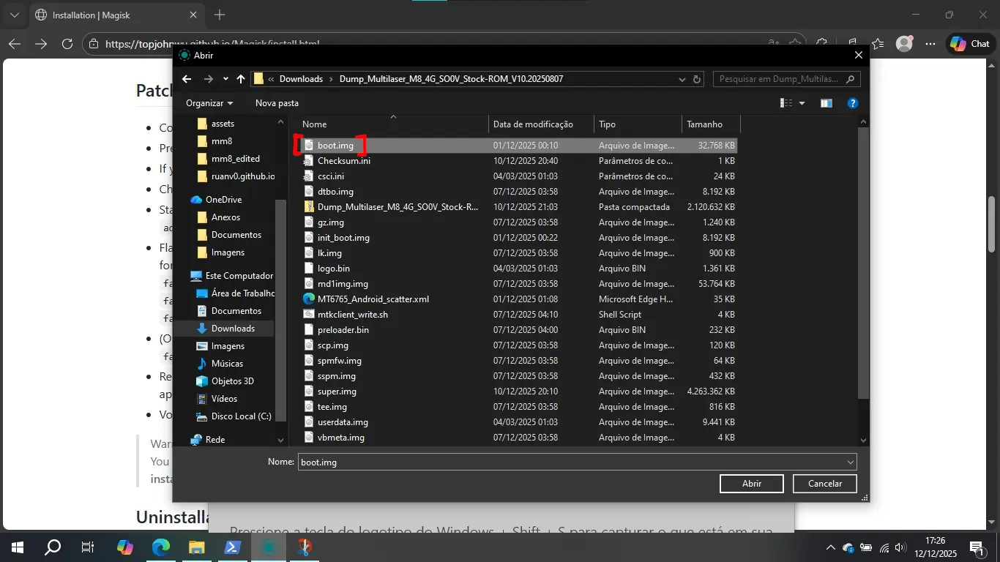
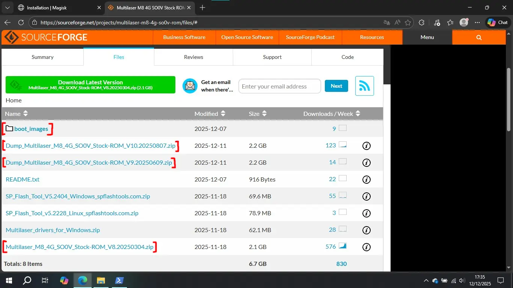
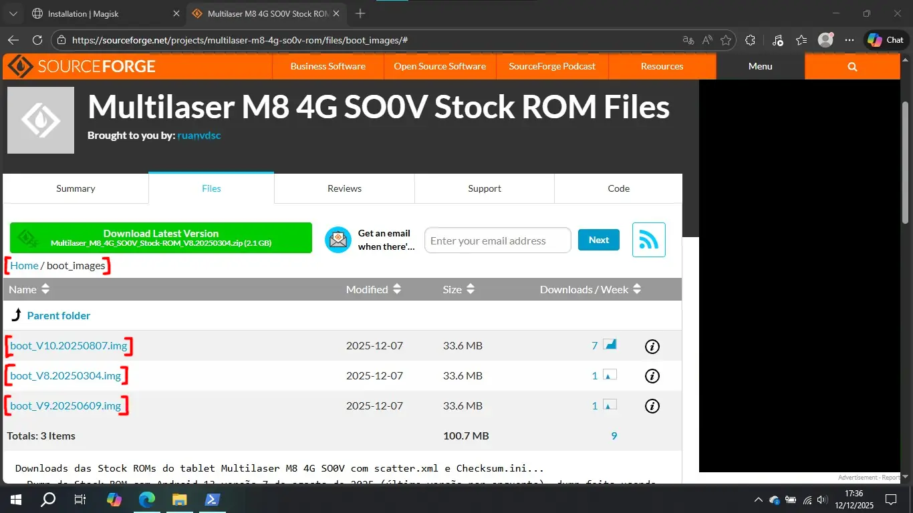
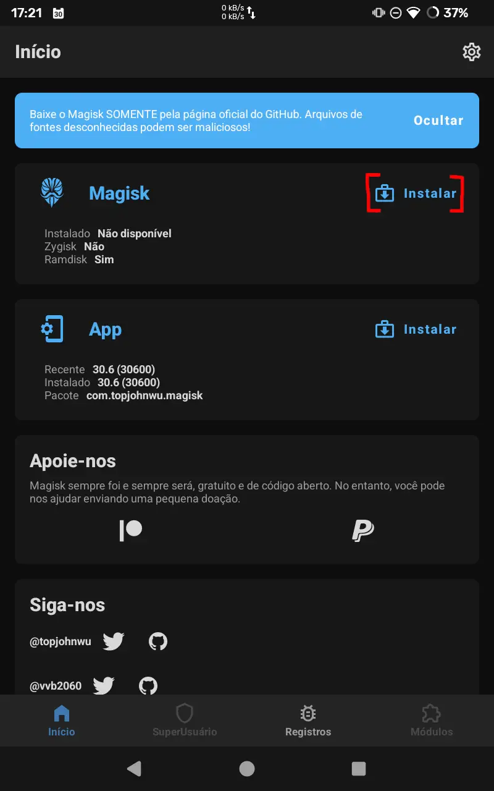
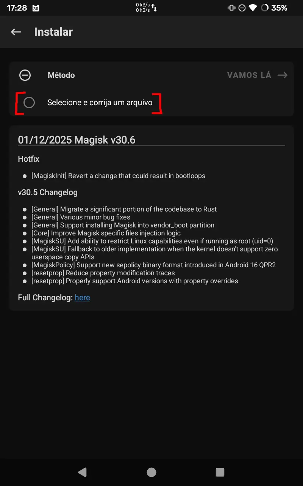
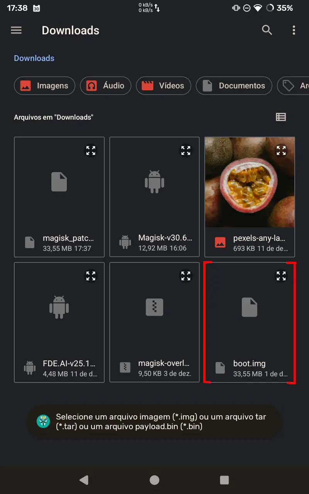
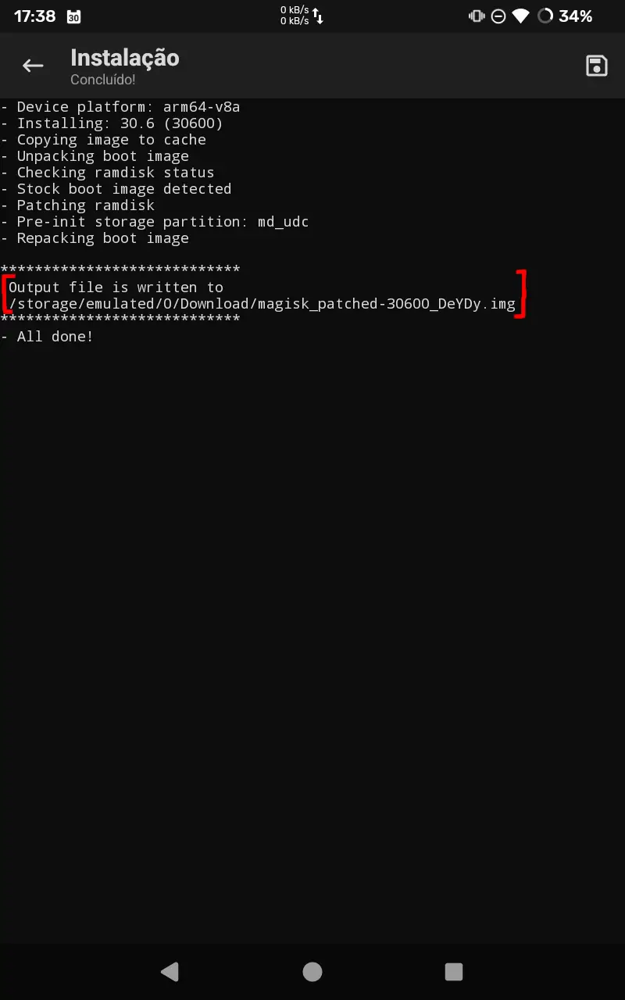
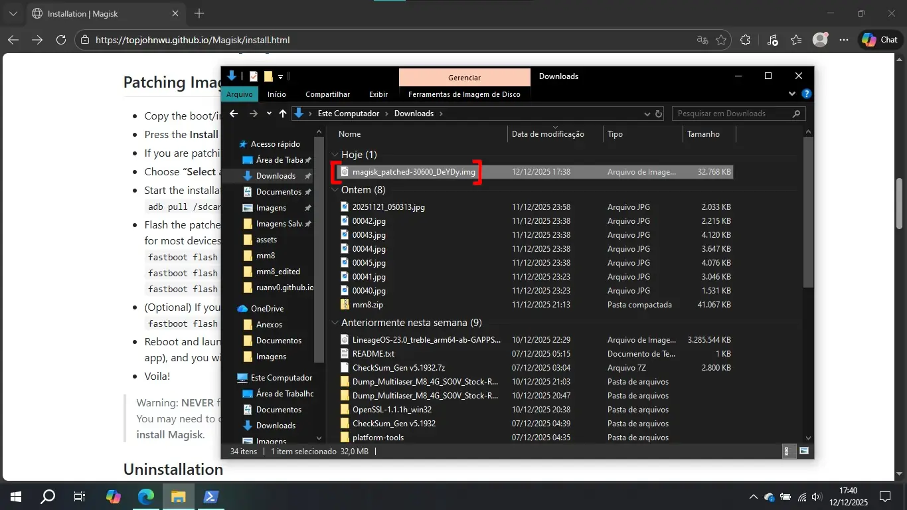
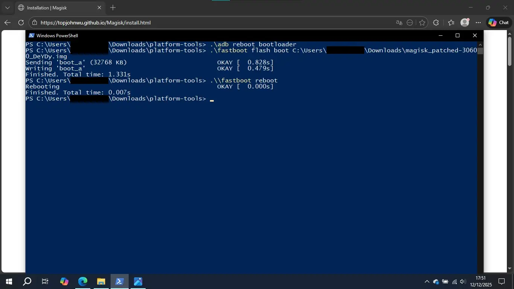
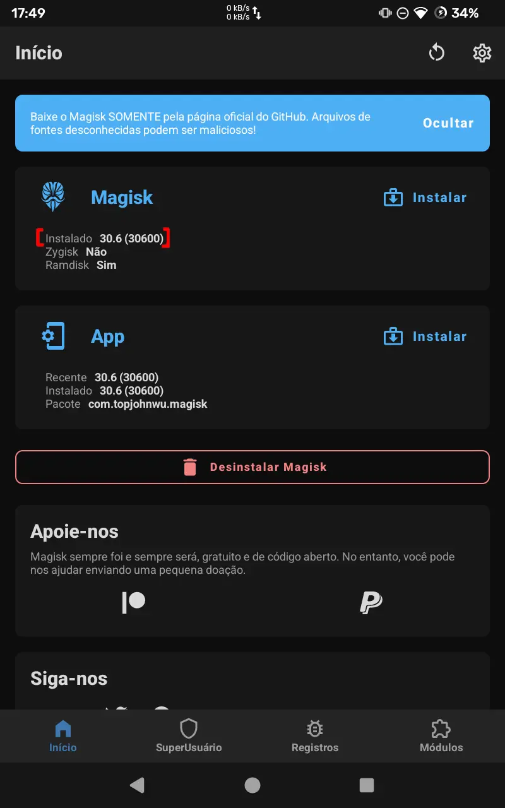

1. Requisitos para a instalação
2. Tenha ou faça o download do arquivo de imagem do boot "boot.img". Eu tenho ele no meu repositório no SourceForge: https://sourceforge.net/projects/multilaser-m8-4g-so0v-rom/files/



3. Copie o arquivo para o tablet.
4. No tablet, instale o aplicativo do Magisk da fonte oficial no GitHub: https://github.com/topjohnwu/Magisk
5. Ao abrir o aplicativo Magisk, a tela inicial pode ser essa. Clique em "Instalar".

6. Clique em "Selecione e corrija um arquivo".

7. Localize no seu tablet e selecione o arquivo de imagem "boot.img", que havia sido copiado do computador.

8. O aplicativo do Magisk irá fazer o arquivo de imagem de boot modificado.

9. Copie este arquivo de imagem modificado para o computador.

10. Com a depuração USB ativada no tablet, digite o seguinte comando usando o ADB no Terminal/PowerShell/Prompt de Comando/cmd para reiniciar o tablet no modo Fastboot:
adb reboot bootloader

11. Para instalar o Magisk na partição boot, digite o comando fastboot flash boot /caminho/para/magisk_patched_[caracteres_aleatorios].img
12. Ao terminar, a palavra "Finished" deve ter aparecido no Terminal, como abaixo, no meu PowerShell.
PS C:\Users\voce\Download\platform-tools> .\fastboot flash boot C:\Users\voce\Download\magisk_patched-30600_DeYDy.img
Sending 'boot_a' (32768 KB) OKAY [ 0.828s]
Writing 'boot_a' OKAY [ 0.479s]
Finished. Total time: 1.331s13. Reinicie o tablet no sistema com o comando fastboot reboot
14. Ao abrir o aplicativo do Magisk, ele deve estar instalado.
